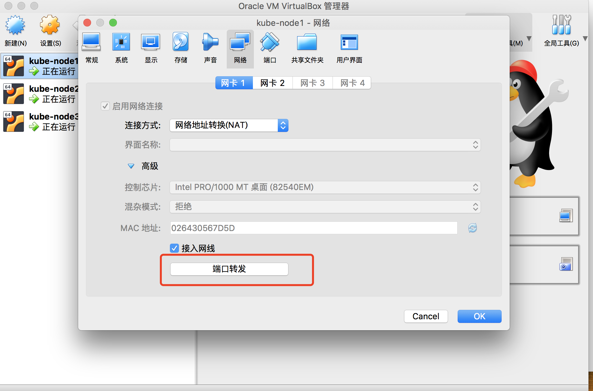
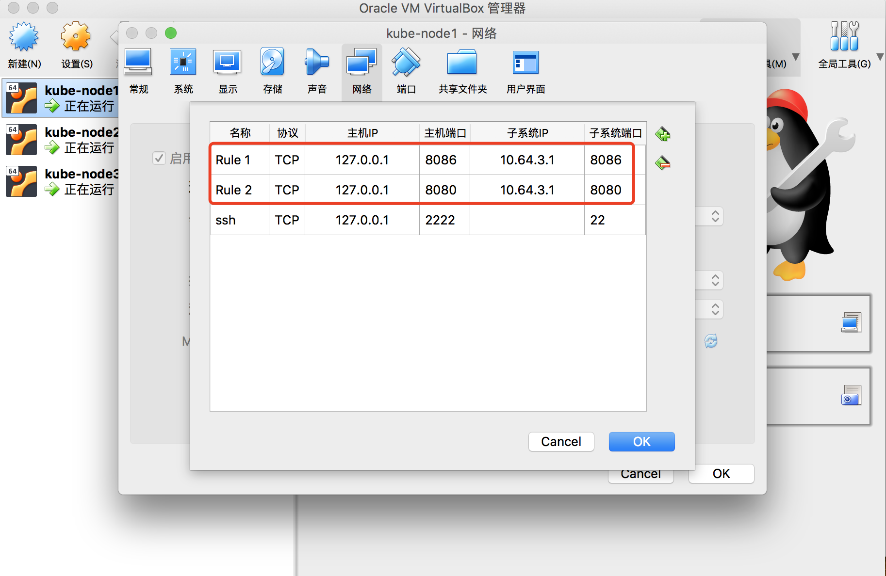

09-2.部署 dashboard 插件
注意：
- 如果没有特殊指明，本文档的所有操作均在 zhangjun-k8s01 节点上执行；
- kuberntes 自带插件的 manifests yaml 文件使用 gcr.io 的 docker registry，国内被墙，需要手动替换为其它 registry 地址（本文档未替换）；
- 可以从微软中国提供的 gcr.io 免费代理下载被墙的镜像；
修改配置文件
将下载的 kubernetes-server-linux-amd64.tar.gz 解压后，再解压其中的 kubernetes-src.tar.gz 文件。
cd /opt/k8s/work/kubernetes/
tar -xzvf kubernetes-src.tar.gz
dashboard 对应的目录是：cluster/addons/dashboard：
cd /opt/k8s/work/kubernetes/cluster/addons/dashboard
修改 service 定义，指定端口类型为 NodePort，这样外界可以通过地址 NodeIP:NodePort 访问 dashboard；
$ cat dashboard-service.yaml
apiVersion: v1
kind: Service
metadata:
name: kubernetes-dashboard
namespace: kube-system
labels:
k8s-app: kubernetes-dashboard
kubernetes.io/cluster-service: "true"
addonmanager.kubernetes.io/mode: Reconcile
spec:
type: NodePort # 增加这一行
selector:
k8s-app: kubernetes-dashboard
ports:
- port: 443
targetPort: 8443
执行所有定义文件
$ ls *.yaml
dashboard-configmap.yaml dashboard-controller.yaml dashboard-rbac.yaml dashboard-secret.yaml dashboard-service.yaml
$ kubectl apply -f .
查看分配的 NodePort
$ kubectl get deployment kubernetes-dashboard -n kube-system
NAME DESIRED CURRENT UP-TO-DATE AVAILABLE AGE
kubernetes-dashboard 1 1 1 1 2m
$ kubectl --namespace kube-system get pods -o wide
NAME READY STATUS RESTARTS AGE IP NODE NOMINATED NODE READINESS GATES
coredns-5b969f4c88-jb6jg 1/1 Running 0 72m 172.30.80.3 zhangjun-k8s01 <none> <none>
kubernetes-dashboard-85bcf5dbf8-5l56v 1/1 Running 0 27s 172.30.80.6 zhangjun-k8s01 <none> <none>
$ kubectl get services kubernetes-dashboard -n kube-system
NAME TYPE CLUSTER-IP EXTERNAL-IP PORT(S) AGE
kubernetes-dashboard NodePort 10.254.249.138 <none> 443:32731/TCP 42s
- NodePort 32731 映射到 dashboard pod 443 端口；
查看 dashboard 支持的命令行参数
$ kubectl exec --namespace kube-system -it kubernetes-dashboard-85bcf5dbf8-5l56v -- /dashboard --help # kubernetes-dashboard-85bcf5dbf8-5l56v 为 pod 名称
2019/05/26 09:12:16 Starting overwatch
Usage of /dashboard:
--alsologtostderr log to standard error as well as files
--api-log-level string Level of API request logging. Should be one of 'INFO|NONE|DEBUG'. Default: 'INFO'. (default "INFO")
--apiserver-host string The address of the Kubernetes Apiserver to connect to in the format of protocol://address:port, e.g., http://localhost:8080. If not specified, the assumption is that the binary runs inside a Kubernetes cluster and local discovery is attempted.
--authentication-mode strings Enables authentication options that will be reflected on login screen. Supported values: token, basic. Default: token.Note that basic option should only be used if apiserver has '--authorization-mode=ABAC' and '--basic-auth-file' flags set. (default [token])
--auto-generate-certificates When set to true, Dashboard will automatically generate certificates used to serve HTTPS. Default: false.
--bind-address ip The IP address on which to serve the --secure-port (set to 0.0.0.0 for all interfaces). (default 0.0.0.0)
--default-cert-dir string Directory path containing '--tls-cert-file' and '--tls-key-file' files. Used also when auto-generating certificates flag is set. (default "/certs")
--disable-settings-authorizer When enabled, Dashboard settings page will not require user to be logged in and authorized to access settings page.
--enable-insecure-login When enabled, Dashboard login view will also be shown when Dashboard is not served over HTTPS. Default: false.
--enable-skip-login When enabled, the skip button on the login page will be shown. Default: false.
--heapster-host string The address of the Heapster Apiserver to connect to in the format of protocol://address:port, e.g., http://localhost:8082. If not specified, the assumption is that the binary runs inside a Kubernetes cluster and service proxy will be used.
--insecure-bind-address ip The IP address on which to serve the --port (set to 0.0.0.0 for all interfaces). (default 127.0.0.1)
--insecure-port int The port to listen to for incoming HTTP requests. (default 9090)
--kubeconfig string Path to kubeconfig file with authorization and master location information.
--log_backtrace_at traceLocation when logging hits line file:N, emit a stack trace (default :0)
--log_dir string If non-empty, write log files in this directory
--logtostderr log to standard error instead of files
--metric-client-check-period int Time in seconds that defines how often configured metric client health check should be run. Default: 30 seconds. (default 30)
--port int The secure port to listen to for incoming HTTPS requests. (default 8443)
--stderrthreshold severity logs at or above this threshold go to stderr (default 2)
--system-banner string When non-empty displays message to Dashboard users. Accepts simple HTML tags. Default: ''.
--system-banner-severity string Severity of system banner. Should be one of 'INFO|WARNING|ERROR'. Default: 'INFO'. (default "INFO")
--tls-cert-file string File containing the default x509 Certificate for HTTPS.
--tls-key-file string File containing the default x509 private key matching --tls-cert-file.
--token-ttl int Expiration time (in seconds) of JWE tokens generated by dashboard. Default: 15 min. 0 - never expires (default 900)
-v, --v Level log level for V logs
--vmodule moduleSpec comma-separated list of pattern=N settings for file-filtered logging
pflag: help requested
command terminated with exit code 2
dashboard 的 --authentication-mode 支持 token、basic，默认为 token。如果使用 basic，则 kube-apiserver 必须配置 --authorization-mode=ABAC 和 --basic-auth-file 参数。
访问 dashboard
从 1.7 开始，dashboard 只允许通过 https 访问，如果使用 kube proxy 则必须监听 localhost 或 127.0.0.1。对于 NodePort 没有这个限制，但是仅建议在开发环境中使用。
对于不满足这些条件的登录访问，在登录成功后浏览器不跳转，始终停在登录界面。
- kubernetes-dashboard 服务暴露了 NodePort，可以使用
https://NodeIP:NodePort地址访问 dashboard； - 通过 kube-apiserver 访问 dashboard；
- 通过 kubectl proxy 访问 dashboard：
如果使用了 VirtualBox，需要启用 VirtualBox 的 ForworadPort 功能将虚机监听的端口和 Host 的本地端口绑定。
可以在 Vagrant 的配置中指定这些端口转发规则，对于正在运行的虚机，也可以通过 VirtualBox 的界面进行配置：
 
通过 kubectl proxy 访问 dashboard
启动代理：
$ kubectl proxy --address='localhost' --port=8086 --accept-hosts='^*$'
Starting to serve on 127.0.0.1:8086
- --address 必须为 localhost 或 127.0.0.1；
- 需要指定
--accept-hosts选项，否则浏览器访问 dashboard 页面时提示 “Unauthorized”；
浏览器访问 URL：http://127.0.0.1:8086/api/v1/namespaces/kube-system/services/https:kubernetes-dashboard:/proxy
通过 kube-apiserver 访问 dashboard
获取集群服务地址列表：
$ kubectl cluster-info
Kubernetes master is running at https://127.0.0.1:8443
CoreDNS is running at https://127.0.0.1:8443/api/v1/namespaces/kube-system/services/kube-dns:dns/proxy
kubernetes-dashboard is running at https://127.0.0.1:8443/api/v1/namespaces/kube-system/services/https:kubernetes-dashboard:/proxy
To further debug and diagnose cluster problems, use 'kubectl cluster-info dump'.
- 由于 apiserver 通过本地的 kube-nginx 做了代理，所以上面显示的 127.0.0.1:8443 为本地的 kube-nginx 的 IP 和 Port，浏览器访问时需要替换为 kube-apiserver 实际监听的 IP 和端口，如 172.27.137.240:6443；
- 必须通过 kube-apiserver 的安全端口(https)访问 dashbaord，访问时浏览器需要使用自定义证书，否则会被 kube-apiserver 拒绝访问。
- 创建和导入自定义证书的步骤，参考：A.浏览器访问kube-apiserver安全端口
浏览器访问 URL：https://172.27.137.240:6443/api/v1/namespaces/kube-system/services/https:kubernetes-dashboard:/proxy
对于 virtuabox 做了端口映射： http://127.0.0.1:6443/api/v1/namespaces/kube-system/services/https:kubernetes-dashboard:/proxy/
创建登录 Dashboard 的 token 和 kubeconfig 配置文件
dashboard 默认只支持 token 认证（不支持 client 证书认证），所以如果使用 Kubeconfig 文件，需要将 token 写入到该文件。
创建登录 token
kubectl create sa dashboard-admin -n kube-system
kubectl create clusterrolebinding dashboard-admin --clusterrole=cluster-admin --serviceaccount=kube-system:dashboard-admin
ADMIN_SECRET=$(kubectl get secrets -n kube-system | grep dashboard-admin | awk '{print $1}')
DASHBOARD_LOGIN_TOKEN=$(kubectl describe secret -n kube-system ${ADMIN_SECRET} | grep -E '^token' | awk '{print $2}')
echo ${DASHBOARD_LOGIN_TOKEN}
使用输出的 token 登录 Dashboard。
创建使用 token 的 KubeConfig 文件
source /opt/k8s/bin/environment.sh
# 设置集群参数
kubectl config set-cluster kubernetes \
--certificate-authority=/etc/kubernetes/cert/ca.pem \
--embed-certs=true \
--server=${KUBE_APISERVER} \
--kubeconfig=dashboard.kubeconfig
# 设置客户端认证参数，使用上面创建的 Token
kubectl config set-credentials dashboard_user \
--token=${DASHBOARD_LOGIN_TOKEN} \
--kubeconfig=dashboard.kubeconfig
# 设置上下文参数
kubectl config set-context default \
--cluster=kubernetes \
--user=dashboard_user \
--kubeconfig=dashboard.kubeconfig
# 设置默认上下文
kubectl config use-context default --kubeconfig=dashboard.kubeconfig
用生成的 dashboard.kubeconfig 登录 Dashboard。
由于缺少 Heapster 插件，当前 dashboard 不能展示 Pod、Nodes 的 CPU、内存等统计数据和图表。
参考
- https://github.com/kubernetes/dashboard/wiki/Access-control
- https://github.com/kubernetes/dashboard/issues/2558
- https://kubernetes.io/docs/concepts/configuration/organize-cluster-access-kubeconfig/
- https://github.com/kubernetes/dashboard/wiki/Accessing-Dashboard---1.7.X-and-above
- https://github.com/kubernetes/dashboard/issues/2540